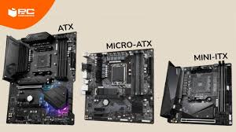
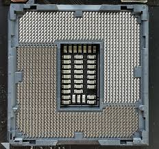
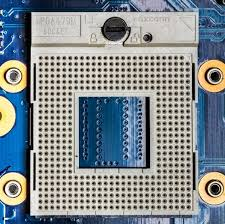
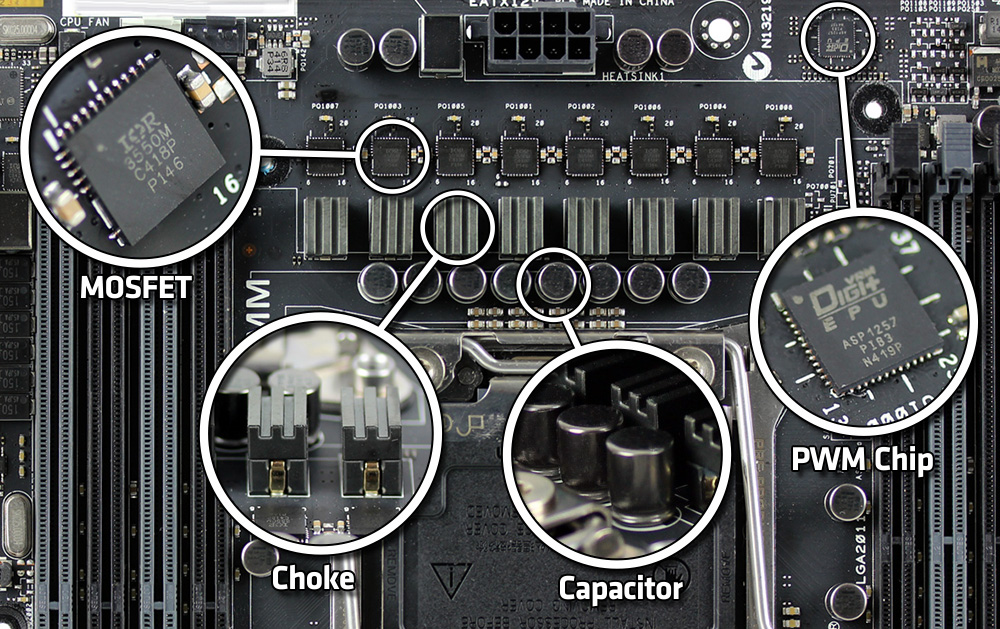
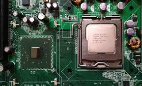
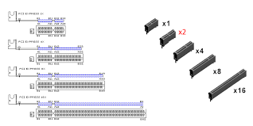
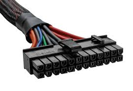
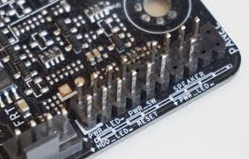
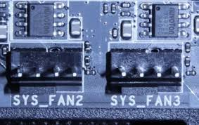

Investigación de la Placa Base
Arquitectura interna y rendimiento del sistema
1. Factores de Forma (Form Factors)
Dimensiones y estándares de montaje.

ATX
305 x 244 mm: El estándar completo. Permite mayor expansión (7 slots PCIe) y mejor flujo de aire.
Micro-ATX
244 x 244 mm: Más compacto pero compatible con ATX. Ideal para setups de gama media.
Mini-ITX
170 x 170 mm: Extremo compacto. Limitado a un solo slot PCIe y 2 slots de RAM.
2. El Zócalo del Procesador (Socket)

LGA (Land Grid Array)
Los pines están en la placa base. Usado por Intel (LGA 1700) y AMD (AM5).

PGA (Pin Grid Array)
Los pines están en el procesador. Estándar clásico de AMD hasta AM4.

3. El VRM y Fases de Alimentación
El VRM regula el voltaje de la fuente (12V) al nivel del CPU (aprox. 1.2V).
- MOSFETs: Conmutan la energía (generan calor).
- Chokes: Estabilizan y filtran la corriente.
- Capacitores: Almacenan carga para un flujo limpio.
Importancia: Sin una buena disipación en los VRM, el CPU sufre "Thermal Throttling".
4. Chipset y Buses de Datos

El Chipset
Es el centro de comunicaciones. Las gamas altas (Z790/X670) permiten overclocking y más puertos que las de entrada (H610/A620).

Líneas PCIe y M.2
Carriles x16 (GPUs) vs x4 (SSD NVMe). La evolución a M.2 NVMe eliminó el cuello de botella de los 600MB/s del puerto SATA.
5. Conexiones Internas y Cabezales (Headers)

Alimentación (Energía)
- ATX 24-pines: El conector más grande; suministra energía general a toda la placa base.
- EPS 8-pines (12V): Ubicado cerca del socket, alimenta exclusivamente al procesador.

Conectores de Gabinete
- F_PANEL: Controla el botón de encendido, reset y los LEDs frontales.
- F_AUDIO: Envía la señal de sonido a los Jacks de auriculares/micrófono frontales.
- USB Headers: Conexiones internas para los puertos USB 2.0 o 3.0 del chasis.

Almacenamiento y Ventilación
- Puertos SATA: Interfaz de datos para discos duros (HDD) o SSDs de 2.5".
- CPU_FAN / SYS_FAN: Cabezales de 4 pines para controlar la velocidad de los ventiladores.